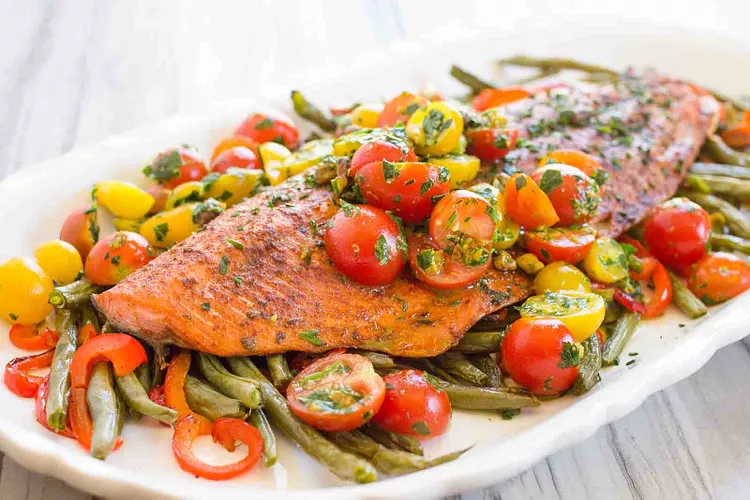

Sheet Pan Harissa Salmon
I use a dry harissa spice blend for this salmon.
This is a Moroccan seasoning that contains a variety of
chilies
mixed with caraway and coriander. It can also have garlic, sumac, ginger, and cinnamon. I love to add a bit of
dried orange peel as well.
If you don't have harissa or you just want a different flavor, you can also try switching up the dry rub for any
of your favorite seasonings. Chipotle chili powder, lemon pepper, or bbq rub would all work great here.
The other key to this recipe is to give the veggies a quick roast in the oven before adding the salmon.
That way, the veggies get nice and roasted, but the salmon doesn't get over cooked.
The cooking time
for the salmon will vary depending on the size of your salmon and your preferred doneness. For 1 1/2 pounds of
salmon, 8 minutes will give you a medium rare and 10 will give you a still-juicy, but fully cooked, salmon.
Ingredients
For the salmon and vegetables:
- 1 1/2 pounds whole salmon fillet
- 1 1/4 pounds green beans, trimmed
- 2 pepper medium red bell peppers, sliced
- 1/4 cup olive oil, divided
- 2 tablespoons dry harissa spice blend (divided)
- 1/2 teaspoon kosher salt (divided)
For the cherry tomato salad:
- 1 tablespoon parsley, roughly chopped
- 2 teaspoons red wine vinegar
- 2 tablespoons olive oil
- 1 clove garlic
- 1/3 cup roasted salted pistachios (optional)
- 1 pint cherry tomatoes, halved
- Pinch kosher salt (or more if not using the pistachios)
Recipe instructions
- Preheat the oven to 425°F.
Line a full sheet pan with foil. (If your sheet pan is too small to fit the side of salmon and the
vegetables, cut the fillet in half and cook on two sheets pans.)
-
Remove the pin bones
Use needle nose pliers to remove the pin bones from the salmon.
- Roast the vegetables:
Toss the green beans and peppers with 1 tablespoon olive oil, 2 teaspoons harissa, and a pinch of salt.
Spread on the sheet pan in a single layer. Roast for 10 minutes.
- Prepare the salmon:
Sprinkle both sides of the salmon with the remaining harissa and a 1/4 teaspoon salt, then brush with olive
oil. (This helps prevent the spices from scorching in the oven.)
- Roast the salmon with the vegetables:
Pull the sheet pan of veggies from the oven and use a spatula to stir them and clear some space in the
middle for the salmon. Return to the oven and roast for 8 to 10 minutes.
- Prepare the tomato salad:
While salmon is in the oven, use a mini food processor or blender to mix parsley, red wine, and olive oil.
Once it’s well-mixed, add the garlic and pistachios (if using) and pulse just a few times. You want some
nice chunks in there. Toss with the cherry tomatoes and season with salt to taste.
- Serve:
Scoop the roasted vegetables onto a serving platter and lay the salmon on top. Spoon the cherry tomato salad
over the salmon and serve.
Home